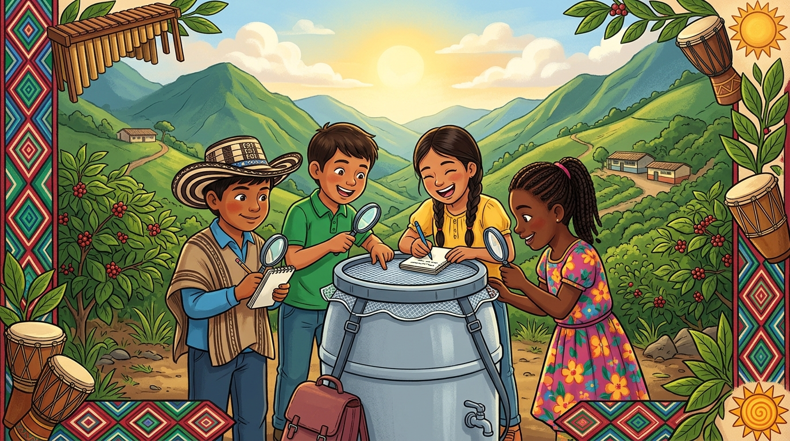

1. Compromiso (Redes Afectivas)
Participar y decidir (El porqué): Permite acordar y alternar responsabilidades dentro de la Tonga y elegir libremente cómo comunicar el mensaje preventivo a las familias del territorio (Pautas DUA 7.2 y 8.3).
Propuesta de intervención pedagógica para estudiantes de cuarto grado de básica primaria de la Institución Educativa Técnico San Jacinto (zona rural de Guachené, Cauca), articulando el Diseño Universal para el Aprendizaje (DUA · CAST 2024), el enfoque STEM+A y el Proyecto Etnoeducativo Afrocaucano (PEA) en diálogo intercultural con la herencia indígena Nasa y la tradición cafetera.

El cuidado del agua almacenada en los hogares rurales constituye la situación de aprendizaje elegida para transformar la instrucción teórica pasiva en una investigación escolar activa. La estrategia integra las cinco dimensiones de STEM+A con los tres principios neuroeducativos del Diseño Universal para el Aprendizaje (DUA):
Participar y decidir (El porqué): Permite acordar y alternar responsabilidades dentro de la Tonga y elegir libremente cómo comunicar el mensaje preventivo a las familias del territorio (Pautas DUA 7.2 y 8.3).
Comprender (El qué): Contempla explicaciones orales, ilustraciones, dramatizaciones, letra ampliada (macrotipo), reglas graduadas táctiles de alto contraste y lectura en relieve Braille cuando se requiera (Pautas DUA 1.2 y 1.3).
Demostrar (El cómo): Ofrece múltiples medios para explicar con teatro, narraciones o pictogramas, registrar mediciones, calcular promedios y divulgar con criterios científicos comunes (Pautas DUA 4.1, 5.1 y 6.2).
Desde la dimensión cuantitativa y experimental, el estudiante de 4.º grado modela la absorción capilar en tres materiales cotidianos ($M \in \{\text{Papel}, \text{Tela}, \text{Plástico PET}\}$) usando tiras estandarizadas de $2 \times 10\text{ cm}$ sumergidas $1\text{ cm}$ y sintetiza tres réplicas experimentales ($n = 3$) mediante el estimador insesgado de la media muestral:
$$\bar{x}_M = \frac{1}{n} \sum_{i=1}^{n} x_{M,i} = \frac{x_{M,1} + x_{M,2} + x_{M,3}}{3}$$
El Proyecto Etnoeducativo Afrocaucano (PEA) incorpora la Tonga Etnoeducativa «Hilando pensamiento y tejiendo historia», que vincula el aprender haciendo, la tradición oral y la ciencia escolar bajo la filosofía africana Ubuntu («Yo soy porque nosotros somos»). En esta plataforma, dicho tejido abraza tres raíces del suroccidente y centro de Colombia:
Representado en el Rojo Chumbe y el Verde Montaña: la geometría del tejido enseña que cada hilo (Ciencias, Matemáticas, Ingeniería, Artes y Saberes Ancestrales) sostiene la defensa de la vida y de Uma Kiwe (la Madre Tierra).
Representado en el Oro Solar Ubuntu y el Azul del Río: la solidaridad de las cuadrillas comunitarias (Tongas de 4 integrantes), el ritmo de la marimba y las coplas orales para proteger la salud colectiva.
Representado en el Café Tostado, el Pergamino y la Cereza Madura: el cuidado riguroso de los tanques de agua en la finca, la observación paciente del clima y la conversación familiar alrededor del hogar.
Controla el tiempo exacto de inmersión ($30\text{ s}$ / $120\text{ s}$) y coordina los turnos de escena.
Mide en centímetros ($\text{cm}$) el ascenso de humedad con regla estándar o táctil de alto contraste.
Anota las $9$ mediciones en la hoja de registro y comprueba el cálculo de los $3$ promedios.
Lidera la socialización del prototipo de cubierta/trampa y el mensaje o copla comunitaria.
Explora de manera interactiva el Panorama Curricular de 1.º a 5.º Grado (Hoja 2 del Excel: Matriz_General_1a5_Grados) y la Ruta de 7 Operaciones de Planeación (Hoja 4: Ruta_7_Operaciones_4G):
Áreas Integradas (STEM+A): Ciencias Naturales, Matemáticas, Tecnología e Ingeniería, Artes y Castellano.
Saber / Principio PEA: Trabajo cooperativo en Tonga, prevención comunitaria, filosofía Ubuntu y saberes familiares del agua.
Red Cerebral DUA Dominante: Integración completa de Redes Afectivas, de Reconocimiento y Estratégicas.
Pautas DUA Aplicadas: Pautas 1.3, 4.1, 5.1 y 8.3 (Flexibilidad en representación, prototipado de cubiertas/trampas y copla/canción).
Propósito Curricular Sintético: Dramatizar la transmisión del dengue, comparar el avance de humedad en papel ($\bar{x}=4.5\text{ cm}$), tela ($\bar{x}=6.0\text{ cm}$) y plástico PET ($\bar{x}=0\text{ cm}$), calcular la media aritmética, diseñar una cubierta hermética y divulgar recomendaciones junto a las familias.
Aplicación en 4.º Grado: ¿Cómo podemos explicar a nuestras familias la transmisión del dengue y cómo influyen las propiedades de impermeabilidad y absorción del papel, la tela y el plástico en el diseño de una cubierta o trampa para reducir criaderos en recipientes con agua?
Producto / Evidencia Concreta: Pregunta orientadora visible en el aula, en las guías impresas en macrotipo/Braille y en la apertura del Teatro Epidemiológico.
La intervención se desarrolla en tres sesiones articuladas (4 horas de aula + trabajo con las familias). Cada sesión cuenta con su propia subpágina modular equipada con juegos interactivos, simuladores matemáticos y guías PDF descargables:
Dramatización en Tonga de las 3 escenas (El Criadero, La Picadura y la Familia Preventiva), juego de secuenciación escénica y simulador epidemiológico del vector Aedes aegypti.
Abrir Módulo 01 y JuegosSimulador en vivo de capilaridad en tiras de $2 \times 10\text{ cm}$ (Papel, Tela y Plástico PET), hoja de registro con cálculo automático de promedios ($\bar{x}$) y constructor de cubiertas/trampas.
Abrir Módulo 02 y SimuladorEstudio creativo de los 5 canales DUA (Coplas con caja de ritmos afro-andina, TikToker, Infografía, Reportaje y Feria) + Calculadora de Rúbrica Formativa de 6 criterios.
Abrir Módulo 03 y RúbricaTOC_y_Sintesis)| Convención Visual DUA | Significado en la Planeación y Simuladores | Aplicación Práctica en el Aula y en la Web |
|---|---|---|
| Azul Claro (Entrada) | Campos editables / Insumos iniciales | Mediciones en $\text{cm}$ ingresadas por el Registrador de la Tonga o variables de los simuladores. |
| Verde Claro (Fórmula) | Campos calculados automáticamente | Medias aritméticas ($\bar{x}$), promedios generales y eficacia del sellado de la cubierta. |
| Gris / Pergamino (Zebra) | Filas alternas de lectura accesible | Facilita el rastreo visual horizontal sin fatiga cognitiva en tablas extensas. |
| Amarillo Solar (Atención) | Principios DUA y Roles de la Tonga | Destaca ajustes razonables (Braille, regla táctil, opciones sin carga oral) y trabajo Ubuntu. |
Todos los materiales didácticos cuentan con trazabilidad física 1:1 para trabajo desconectado en zonas rurales de Guachené, La Unión del Salado, resguardos Nasa y veredas cafeteras:
Guion didáctico de las 3 escenas, tarjetas de roles accesibles DUA y formato para recoger el saber familiar del agua en casa.
Descargar Guía 01 (PDF)Plantilla de registro de las $9$ mediciones (Papel, Tela y Plástico PET), cálculo de promedios y ficha de diseño de la cubierta hermética.
Descargar Guía 02 (PDF)Plantillas para los 5 canales multimodales DUA (Copla/Jingle, TikToker, Infografía, Reportaje y Feria) y registro del comentario familiar.
Descargar Guía 03 (PDF)Manual para el docente con la Ruta de 7 Operaciones STEMA-PEA, los 6 criterios de evaluación en 3 niveles y lista de chequeo DUA.
Descargar Guía 04 (PDF)